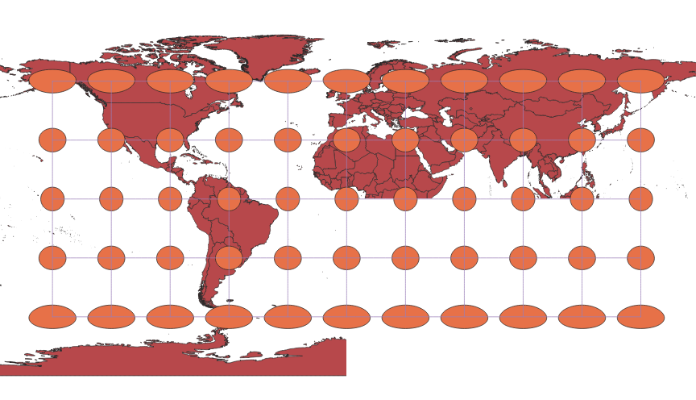
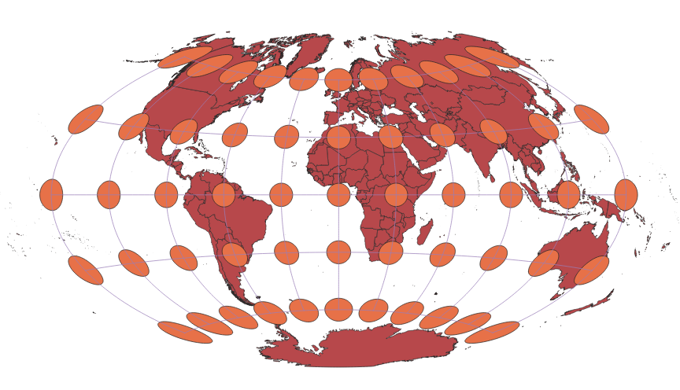
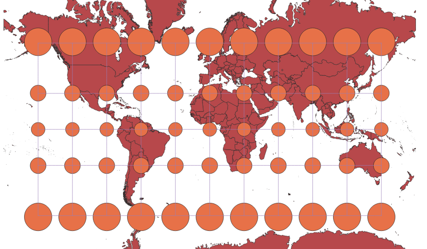
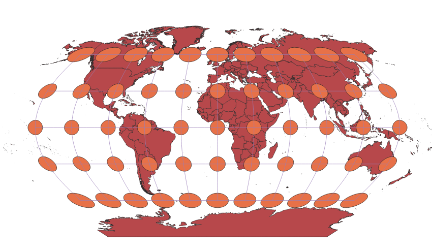
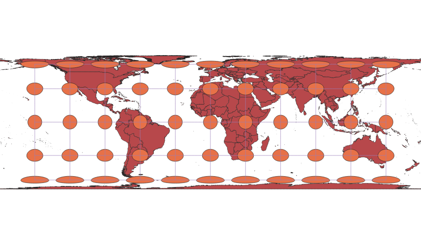
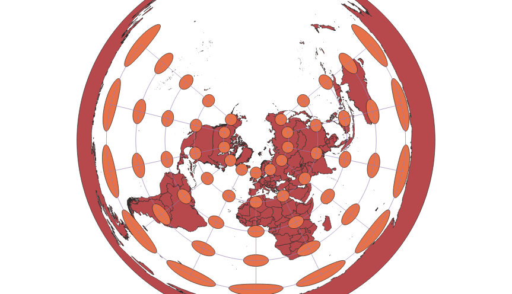
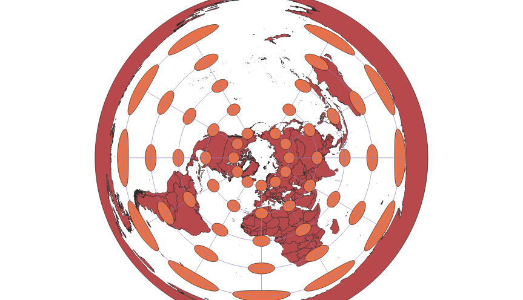
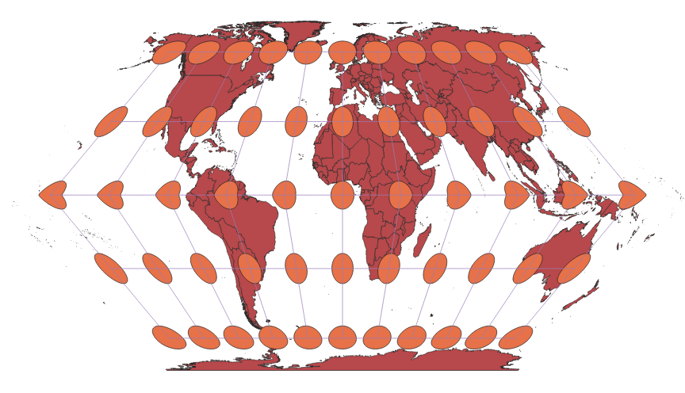
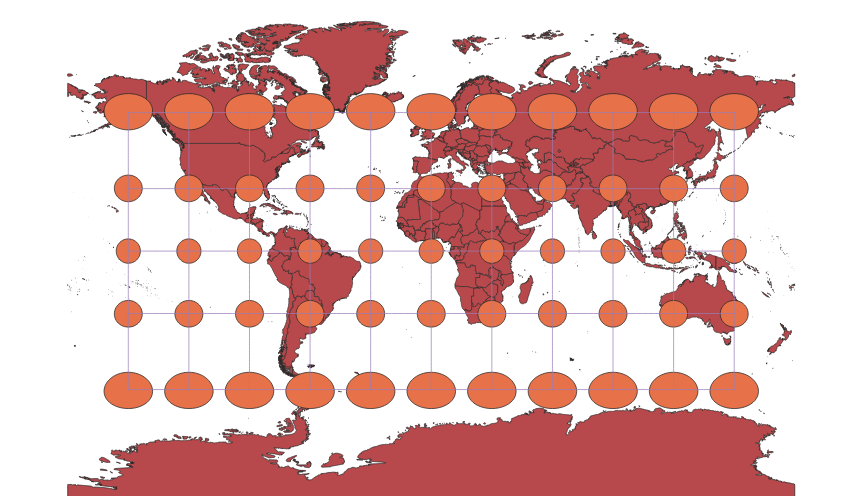

In this project I learned how to display images in different projections
This world map can be projected in many ways based upon what information the user wants
to know. The QGIS program with the help of the Indicatrix Mapper allowed me to create several
different versions of the same map. The projections were manipulated by changing the
Coordinate Reference System or CRS, resulting in the various projections that can be seen
below. After figuring out how to display the map in one specific projection, it became easier
to test and see new projections.
WGS84 Projection
Some observations

Aitoff Projection
Some observations

Pseudo-Mercator Projection
Some observations

Sphere Winkel Projection
Some observations

World Cylindrical Equal Area Projection
Some observations

World Equidistant Conical Projection
Some observations

North Pole Azimuthal Equidistant Projection
Some observations

Eckert II Projection
Some observations

Miller Cylindical Projection
Some observations

Now, you should add the following projections on your own:
Data used for this project
Download Natrual Earth 1:10m Cultural Vector